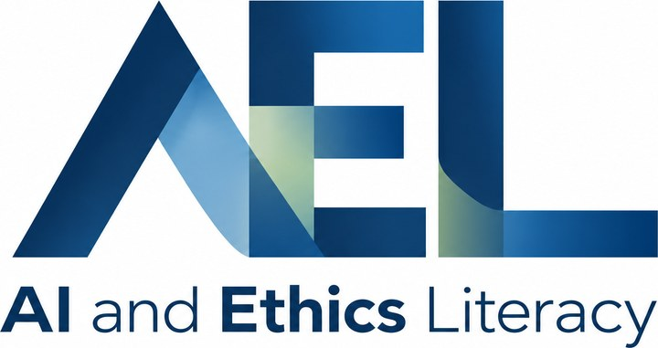

Partecipa alla validazione del textbook AI&Ethics Literacy for Students
Cerchiamo docenti disposti a coinvolgere le proprie classi. Un minuto di lettura.
Tra dicembre 2026 e maggio 2027, nelle date che preferite. Anche in più discipline o nelle ore di Educazione civica (cittadinanza digitale).
Terze della secondaria di secondo grado
Benvenute anche seconde e quarte.
Cerchiamo classi di tutti gli indirizzi:
- Istituti tecnici
- Istituti professionali
- Liceo classico e liceo scientifico
- Tutti gli altri licei
Leggono un paragrafo e compilano un breve Google Form
- Chiarezza e qualità della scrittura
- Contenuti difficili da capire o da semplificare
- Accessibilità e inclusività, anche per BES
Supervisionate l'attività durante le due ore
Nient'altro. Contribuite a una sperimentazione nazionale per validare il manuale.
Una risorsa sull'etica dell'IA gratuita e open access
Per tutte le studentesse e tutti gli studenti. Segue il volume per docenti già pubblicato.
AI & Ethics Literacy for Teachers →Il gruppo di lavoro
Coordinamento scientifico a cura di SIpEIA e Università della Calabria (DICES).
- Ines CrispiniUniversità della Calabriaines.crispini@unical.it
- Tiziana CatarciSapienza Università di Roma · CNR-ISTC · Presidente SIpEIAcatarci@diag.uniroma1.ittiziana.catarci@istc.cnr.it
- Maria Cristina CarrisiUniversità di Cagliarimariacri.carrisi@unica.it
- Emiliana MurgiaMinistero dell'Istruzione e del Meritoemiliana.murgia@unifg.it
- Martina RossiUniversità di Foggiamartina.rossi@unifg.it
- Aldo PisanoMIM · Università della Calabria · SIpEIA
Rispondete all'email con in copia
aiethicsliteracy@gmail.com
Nella risposta indicate quante classi terze potete coinvolgere e in quale istituto (nome e indirizzo di studio).
Seguiranno tutte le indicazioni operative.
Grazie per il vostro contributo.
Il team AI&Ethics Literacy for Students